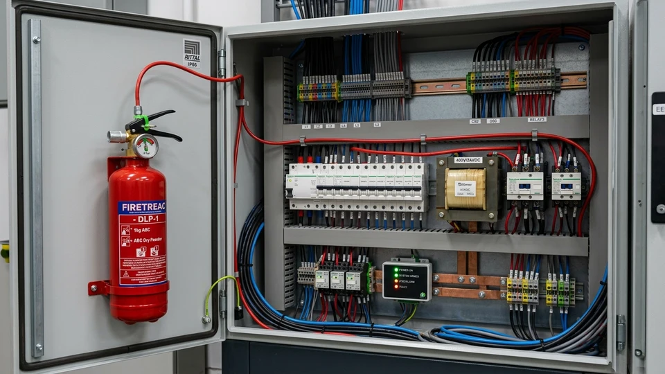

Pano İçi Otomatik Söndürme Sistemi (Doğrudan & Dolaylı)
Elektrik kaynaklı yangınları henüz pano içindeyken, bina yangın algılama sistemleri dahi fark etmeden 3 ila 5 saniyede kaynağında durduran polimer algılama hortumlu mikro teknoloji.

3 SANİYEDE KAYNAĞINDA MÜDAHALE · ELEKTRİK AKIMI İSTEMEZ · TAM OTOMATİK
Sisteme Genel Bakış ve Koruma Prensibi
Sanayi tesisleri, oteller, veri merkezleri ve ticari binalardaki yangınların %30'dan fazlası elektrik dağıtım panolarındaki aşırı yük, gevşek klemens bağlantıları veya kısa devre arklarından kaynaklanır. Pano İçi Otomatik Söndürme Sistemi, bu tehlikeyi tüm odaya veya binaya yayılmadan önce doğrudan panonun içinde yok etmek üzere tasarlanmış mikro bir mühendislik çözümüdür.
Sistemin kalbinde özel polimer alaşımlı, ısıya duyarlı algılama hortumu (Detection Tubing) yer alır. Pano içerisindeki kablo yollarına ve bara bağlantılarına yakından döşenen bu hat, 110°C ile 170°C arasında bir sıcaklığa maruz kaldığında alevin tam merkezinde mikro bir delik açarak patlar. Doğrudan (Direct) sistemde gaz bu delikten alevin üzerine püskürürken; Dolaylı (Indirect) sistemde açılan hat ana vanayı tetikleyerek paslanmaz nozullardan tüm panoyu temiz gazla doldurur.
Hiçbir elektrik beslemesine, pile veya harici algılama santraline ihtiyaç duymayan tamamen pnömatik mekanik mimarisi sayesinde genel elektrik kesintilerinde bile %100 kesintisiz güvenlik sağlar. İçerisindeki FM200 veya Novec 1230 gazı sayesinde pano içindeki pahalı şalt ekipmanları hiçbir zarar görmez.
Nasıl Çalışır? — 4 Aşamalı Müdahale Döngüsü
Basınçlı esnek polimer boru pano içerisindeki tüm kritik kablo bağlantılarını ve şalt elemanlarını 7/24 temas mesafesinde izler.
Ark veya aşırı ısınma meydana geldiğinde boru en sıcak noktadan (110°C-170°C) delinerek basınç farkı yaratır.
Direct sistemde delikten doğrudan alev noktasına; Indirect sistemde ise nozullardan tüm pano hacmine saniyeler içinde gaz boşalır.
Alev 3-5 saniyede söndürülür, yangının komşu panolara veya odaya sıçraması tamamen önlenir ve alarm kontağı ana santrale iletilir.
Teknik Özellikler ve Tasarım Parametreleri
Öne Çıkan Avantajlar
- Yangını binaya yayılmadan ve bina dedektörleri algılamadan çok önce panonun içinde söndürür.
- Elektrik kesintilerinden, voltaj dalgalanmalarından veya batarya arızalarından bağımsız çalışır.
- Temiz gaz (FM200/Novec) kullandığı için kontaktör, PLC, inverter ve rölelere sıfır zarar verir.
- Üzerindeki basınç şalteri ile ana yangın alarm santraline veya BMS bina otomasyonuna kuru kontak bilgisi gönderir.
- Kompakt yapısıyla pano yanına veya içine kolayca monte edilir, zemin alanı işgal etmez.
- Mevcut aktif çalışan elektrik panolarına iş kesintisi yaratmadan hızla entegre edilebilir.
Kritik Uygulama Alanları
Uluslararası Standartlar & Mühendislik Desteğimiz
Fenix Yangın bünyesinde tasarlanan her sistem, uluslararası can ve mal güvenliği normlarına %100 uyumlulukla projelendirilir.
- NFPA 2001 — Standard on Clean Agent Fire Extinguishing Systems
- ISO 14520 / EN 15004 Temiz Gaz Standartları Uyumlu Ekipman
- CE Basınçlı Kaplar Direktifi (PED 2014/68/EU)
- T.C. Binaların Yangından Korunması Hakkında Yönetmelik
- Elektrik Kuvvetli Akım Tesisleri Yönetmeliği Yangın Emniyeti
- ISO 9001 Kalite Yönetim Sertifikalı Üretim ve Montaj
Pano İçi Söndürme Tüp Kapasiteleri (kg/m³) ve Direkt vs. İndirekt Seçim Matrisi
Elektrik panosu yangın söndürme sistemlerinde doğru mühendislik seçimi; panonun kapalı iç hacmine (m3), içindeki bölmelerin (gözlerin) yapısına ve seçilen temiz gazlı söndürücü ajana (FM200 veya Novec 1230) göre yapılır:
| Silindir Kapasitesi | Korunan Maks. Pano Hacmi | Sistem Tipi & Tipik Uygulama Alanı |
|---|---|---|
| 1 kg Gazlı Sistem | ≤ 1.0 m³ Kapalı Pano Hacmi | Direkt (DLP): Tek gözlü tali dağıtım panoları, asansör kumanda panosu, CNC kontrol kabini. |
| 2 kg Gazlı Sistem | ≤ 2.0 m³ Kapalı Pano Hacmi | Direkt / İndirekt: Kompanzasyon panoları, PLC/SCADA otomasyon kabinleri, tekli sunucu rak kabini. |
| 4 kg Gazlı Sistem | ≤ 4.0 m³ Çok Gözlü Pano Hacmi | İndirekt (ILP): Orta ölçekli AG ana dağıtım panoları, çok bölmeli MCC motor kontrol kabinleri. |
| 6 kg ve 9 kg Sistem | 6.0 m³ – 9.0 m³ Geniş Kabin | İndirekt (Bakır/Paslanmaz Boru + Nozul): Büyük endüstriyel şalt odası panoları, rüzgar türbini ve GES inverter kabinleri. |
| Direkt vs. İndirekt Farkı | Hortumdan Deşarj vs. Nozuldan Deşarj | Direkt sistemde gaz eriyen tubing deliğinden püskürür (ekonomiktir); İndirekt sistemde tubing vanayı açar, gaz ayrı nozullardan tüm hacme basılır. |
| Sigorta & İSG Uyumu | Basınç Şalteri (NO/NC) + Enerji Kesme | Aktivasyon anında şalteri açtırarak ark beslemesini keser; fabrika yangın sigortası ve İSG elektrik denetim şartlarını karşılar. |
Gerçek Saha Uygulamamız (100 Adet Pano İçi Vaka Analizi)
Eskişehir Yunus Emre Devlet Hastanesi — 100 Adet Elektrik Panosu İçi Yangın Söndürme Sistemi

Eskişehir Yunus Emre Devlet Hastanesi yerleşkesinde yaptığımız saha mühendislik keşfi sonucunda; yoğun bakım, ameliyathane ve ana enerji altyapısını besleyen toplam 100 adet elektrik panosu içerisine otomatik pano içi yangın söndürme sistemleri kurularak aktif teslim edilmiştir.
Hastane yangın güvenliği kapsamında her panoya harici enerji gerektirmeyen, 100–120°C sıcaklıkta en sıcak noktadan açılarak temiz gazı doğrudan ark kaynağına püskürten ısıya duyarlı kırmızı polimer algılama hortumlu Fenix silindirler entegre edilmiştir.
Saha Mühendislik ve Uygulama Akışı (İnfografik Süreç Özeti)
Tüm tamamlanan 8 gerçek saha projemizi ve infografik vaka analizlerimizi inceleyin →
Alternatif & Tamamlayıcı Sistemler
Sıkça Sorulan Sorular
+ Pano içi söndürmede Direct ile Indirect sistem arasındaki fark nedir?
Direct sistemde ısıyı algılayan polimer hortum alev noktasında delinir ve söndürücü gaz doğrudan bu minik delikten alevin kaynağına fışkırır (küçük ve orta ölçekli panolar için idealdir). Indirect sistemde ise polimer hortum sadece tetikleyici olarak çalışır; patladığında vana açılır ve gaz çelik boru hattı ile nozullardan panonun tamamına homojen olarak boşalır (büyük ve çok bölmeli panolar için uygundur).
+ Elektrik panosu yangınında tozlu veya sulu söndürme neden kullanılmaz?
Kuru kimyevi toz pano içerisindeki tüm hassas kartları ve kontaktörleri aşındırır, iletken tortu bırakarak panoyu tamamen kullanılamaz hale getirir ve haftalarca süren fabrika duruşuna yol açar. Su ise yüksek voltajda ölümcül kısa devreler ve ark patlamaları yaratır. Pano içi temiz gaz sistemleri ise yangını anında söndürür ve panoyu sıfır hasarla çalışır durumda bırakır.
+ Polimer hortumun kullanım ömrü ve bakım ihtiyacı nedir?
Polimer tubing son derece dayanıklı malzemeden üretilmiştir ve normal çalışma şartlarında uzun yıllar elastikiyetini korur. Fenix Yangın olarak yılda en az iki defa silindir manometresi, hortum basıncı ve mekanik bağlantıların sızdırmazlık denetimini gerçekleştiriyoruz.
+ Sistem çalıştığında ana yangın santraline veya güvenliğe sinyal gider mi?
Evet. Vana üzerine entegre edilen basınç anahtarı (pressure switch) gaz boşalması veya hortum delinmesi anında kontak kapatarak binanın merkezi yangın alarm santraline, PLC panosuna veya işletme güvenliğine acil durum ikazı iletir.